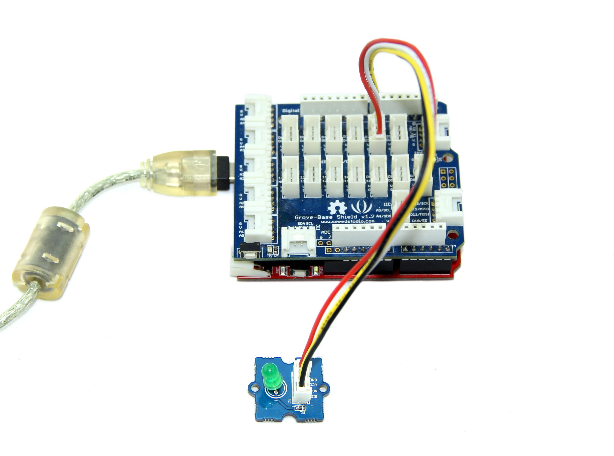

Grove - LED is designed for the beginners of Arduino/Seeeduino to monitor controls from digital ports. It can be mounted to the surface of your box or desk easily and used as pilot lamp for power or signal. Its brightness can be adjust by potentiometer.

| Item | Description |
| LED Control Mode | Digital Pin of Arduino |
| Working Voltage | 5V |
| Supply Mode | Grove Interface |
Here we show how to use Arduino to control the state of the LED.
1. Connect the LED to Base Shield's digital port 2 with 4pin Grove Cable.Of course you can change to other valid digital ports if it's necessary and the definitions of the port should be changed too.
2. Plug it onto the Arduino/Seeeduino. Connect the board to PC using USB cable.

3. Copy the demo code to your sketch, then upload to Arduino or Seeeduino board. Please click here if you do not know how to upload.
You will see the LED blink every second.
/************************************************************************* * File Name : GroveLEDDemoCode.ino * Author : Seeedteam * Version : V1.1 * Date : 18/2/2012 * Description : Demo code for Grove - LED *************************************************************************/ #define LED 2 //connect LED to digital pin2 void setup() { // initialize the digital pin2 as an output. pinMode(LED, OUTPUT); } void loop() { digitalWrite(LED, HIGH); // set the LED on delay(500); // for 500ms digitalWrite(LED, LOW); // set the LED off delay(500); }
Connect the LED to Port D4 and power on the Raspberry Pi, using the Grove wire connector. This is a test to make led blinking. You can connect to GrovePi+ with it as the picture below.
# GrovePi LED Blink example import time from grovepi import * # Connect the Grove LED to digital port D4 led = 4 pinMode(led,"OUTPUT") time.sleep(1) while True: try: #Blink the LED digitalWrite(led,1) # Send HIGH to switch on LED time.sleep(1) digitalWrite(led,0) # Send LOW to switch off LED time.sleep(1) except KeyboardInterrupt: # Turn LED off before stopping digitalWrite(led,0) break except IOError: # Print "Error" if communication error encountered print "Error"
cd GrovePi/Software/Python/
sudo python grove_led_blink.py